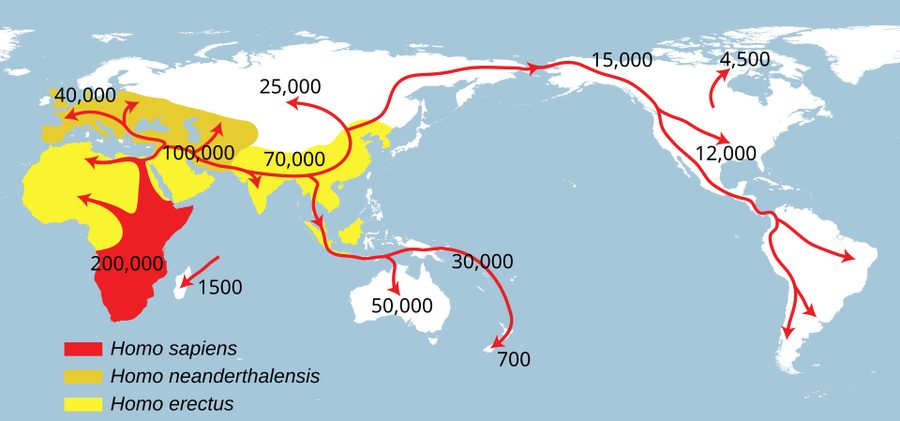

Respuesta corta
Depende de lo que busques. Para curiosidad y genealogía pueden ser interesantes, sobre todo para encontrar parientes. Para salud, no sustituyen a una prueba médica. Y antes de enviar tu saliva conviene saber qué pasa con tus datos.


Lo que hacen bien
- Encontrar parientes: comparan tu ADN con millones de usuarios y detectan con bastante precisión primos, medio hermanos o padres biológicos.
- Linajes antiguos: el ADN mitocondrial (por línea materna) y el cromosoma Y (por línea paterna) indican grandes ramas de la humanidad.
Lo que no hacen tan bien
- Los porcentajes de origen ("32 % ibérico, 15 % norteafricano...") son estimaciones que comparan tu ADN con poblaciones de referencia actuales. Cambian de una empresa a otra y de una versión a otra. No existen poblaciones "puras": todos somos mezcla. Ver evolución humana.
- Los resultados de salud analizan solo unas pocas variantes, pueden no detectar la mayoría de las variantes de riesgo y tienen falsos positivos. Un resultado preocupante debe confirmarse en un laboratorio clínico, y uno tranquilizador no descarta nada.
Lo que hay que pensar antes
- Privacidad: tu ADN dice cosas de tus padres, hermanos e hijos, que no han dado su permiso. En 2023, una de las grandes empresas sufrió un robo de datos que afectó a millones de usuarios, y en 2025 entró en concurso de acreedores, lo que generó dudas sobre qué pasaría con sus bases de datos.
- Sorpresas familiares: muchas personas han descubierto que su padre no era su padre biológico o que tenían hermanos desconocidos.
- Uso policial: algunas bases de datos permiten a la policía buscar parientes de sospechosos. Ver genética forense.
Más en: Tests genéticos directos al consumidor.
Fuentes
- Royal CD, Novembre J, Fullerton SM, et al. Inferring genetic ancestry: opportunities, challenges, and implications. Am J Hum Genet. 2010;86(5):661-673. doi:10.1016/j.ajhg.2010.03.011